Statistical Analysis Report
Date: June 05, 2025
Executive Summary
This report addresses the following research question:
How do temperature and wind speed affect ozone levels?
Dataset Overview: A dataset with 153 observations and 6 variables was analyzed.
Dataset Sample
| Ozone | Solar.R | Wind | Temp | Month | Day |
|---|---|---|---|---|---|
| 41 | 190 | 7.4 | 67 | 5 | 1 |
| 36 | 118 | 8.0 | 72 | 5 | 2 |
| 12 | 149 | 12.6 | 74 | 5 | 3 |
| 18 | 313 | 11.5 | 62 | 5 | 4 |
| NA | NA | 14.3 | 56 | 5 | 5 |
| 28 | NA | 14.9 | 66 | 5 | 6 |
| 23 | 299 | 8.6 | 65 | 5 | 7 |
| 19 | 99 | 13.8 | 59 | 5 | 8 |
| 8 | 19 | 20.1 | 61 | 5 | 9 |
| NA | 194 | 8.6 | 69 | 5 | 10 |
Visualizations
Interactive 3D Visualization
Residual Plot: Check for Homoscedasticity and Linearity
Coefficient Plot: Effects of Temperature and Wind on Ozone

Statistical Model Summaries
Ozone Linear Regression: Temperature Wind
Coefficient Estimates:
| term | estimate | std.error | statistic | p.value | conf.low | conf.high |
|---|---|---|---|---|---|---|
| (Intercept) | -71.033218 | 23.5779922 | -3.012691 | 0.0031962 | -117.745473 | -24.320963 |
| Temp | 1.840179 | 0.2499634 | 7.361793 | 0.0000000 | 1.344956 | 2.335401 |
| Wind | -3.055491 | 0.6632503 | -4.606844 | 0.0000108 | -4.369510 | -1.741472 |
Model Performance Statistics:
| r.squared | adj.r.squared | sigma | statistic | p.value | df | logLik | AIC | BIC | deviance | df.residual | nobs |
|---|---|---|---|---|---|---|---|---|---|---|---|
| 0.5687097 | 0.5610762 | 21.85491 | 74.50224 | 0 | 2 | -520.8705 | 1049.741 | 1060.755 | 53972.99 | 113 | 116 |
Linear Regression Model Summary Output
Coefficient Estimates:
| Estimate | Std. Error | t value | Pr(>|t|) | |
|---|---|---|---|---|
| (Intercept) | -71.033218 | 23.5779922 | -3.012691 | 0.0031962 |
| Temp | 1.840179 | 0.2499634 | 7.361793 | 0.0000000 |
| Wind | -3.055491 | 0.6632503 | -4.606844 | 0.0000108 |
R-squared: 0.5687, Adjusted R-squared: 0.5611
F-statistic: 74.5 on 2 and 113 DF, p-value: < 2.22e-16
Shapiro-Wilk Normality Test Results
Test: Shapiro-Wilk normality test
W: 0.931
p-value: < 1e-04
Variance Inflation Factors: Temperature Wind Model
Model Results:
| names | x |
|---|---|
| Temp | 1.353542 |
| Wind | 1.353542 |
Data Summaries
Summary Statistics Table
| Var1 | Var2 | Freq |
|---|---|---|
| Ozone | Min. : 1.00 | |
| Ozone | 1st Qu.: 18.00 | |
| Ozone | Median : 31.50 | |
| Ozone | Mean : 42.13 | |
| Ozone | 3rd Qu.: 63.25 | |
| Ozone | Max. :168.00 | |
| Ozone | NA | |
| Solar.R | Min. : 7.0 | |
| Solar.R | 1st Qu.:113.5 | |
| Solar.R | Median :207.0 | |
| Solar.R | Mean :184.8 | |
| Solar.R | 3rd Qu.:255.5 | |
| Solar.R | Max. :334.0 | |
| Solar.R | NA's :5 | |
| Wind | Min. : 2.300 | |
| Wind | 1st Qu.: 7.400 | |
| Wind | Median : 9.700 | |
| Wind | Mean : 9.862 | |
| Wind | 3rd Qu.:11.500 | |
| Wind | Max. :20.700 | |
| Wind | NA | |
| Temp | Min. :57.00 | |
| Temp | 1st Qu.:71.00 | |
| Temp | Median :79.00 | |
| Temp | Mean :77.87 | |
| Temp | 3rd Qu.:85.00 | |
| Temp | Max. :97.00 | |
| Temp | NA | |
| Month | Min. :5.000 | |
| Month | 1st Qu.:6.000 | |
| Month | Median :7.000 | |
| Month | Mean :7.198 | |
| Month | 3rd Qu.:8.250 | |
| Month | Max. :9.000 | |
| Month | NA | |
| Day | Min. : 1.00 | |
| Day | 1st Qu.: 8.00 | |
| Day | Median :16.00 | |
| Day | Mean :15.53 | |
| Day | 3rd Qu.:22.00 | |
| Day | Max. :31.00 | |
| Day | NA |
Regression Model Coefficient Summary Table
| term | estimate | std.error | statistic | p.value | conf.low | conf.high |
|---|---|---|---|---|---|---|
| (Intercept) | -71.033218 | 23.5779922 | -3.012691 | 0.0031962 | -117.745473 | -24.320963 |
| Temp | 1.840179 | 0.2499634 | 7.361793 | 0.0000000 | 1.344956 | 2.335401 |
| Wind | -3.055491 | 0.6632503 | -4.606844 | 0.0000108 | -4.369510 | -1.741472 |
Interpretation and Conclusions
Executive Summary
Temperature and wind speed significantly affect ozone levels, with temperature showing a strong positive relationship (β = 1.84, p < 0.001) and wind speed demonstrating a moderate negative relationship (β = -3.06, p < 0.001). The model explains 56.87% of the variance in ozone levels, indicating that these two factors are important predictors of ozone concentration.
Key Findings from Visualizations
- 3D Scatter Plot (Key Relationship Visualization):
The 3D scatter plot reveals a clear positive relationship between temperature and ozone levels, with higher temperatures generally associated with higher ozone concentrations. Conversely, increased wind speed appears to be associated with lower ozone levels, particularly at higher temperatures. This visualization supports the notion that both temperature and wind speed play crucial roles in determining ozone concentrations.
- Residual Plot (Diagnostic Visualization):
The residual plot shows a relatively even spread of residuals around the zero line, indicating that the assumptions of homoscedasticity and linearity are reasonably met. However, there is a slight pattern visible, with residuals fanning out at higher fitted values, suggesting some heteroscedasticity at higher ozone levels. This implies that the model's predictive accuracy may decrease for higher ozone concentrations.
- Coefficient Plot (Effect Size Visualization):
The coefficient plot clearly illustrates the positive effect of temperature and the negative effect of wind speed on ozone levels. The confidence intervals for both predictors do not cross zero, indicating statistically significant effects. The plot also shows that the magnitude of the wind speed effect is larger than that of temperature, suggesting that changes in wind speed may have a more substantial impact on ozone levels than equivalent changes in temperature.
Statistical Results
The multiple linear regression model reveals that both temperature and wind speed are statistically significant predictors of ozone levels:
- Temperature effect: β = 1.84 (95% CI: 1.34 to 2.34), p < 0.001
For each 1°F increase in temperature, ozone levels are expected to increase by 1.84 ppb, holding wind speed constant.
- Wind speed effect: β = -3.06 (95% CI: -4.37 to -1.74), p < 0.001
For each 1 mph increase in wind speed, ozone levels are expected to decrease by 3.06 ppb, holding temperature constant.
- Model fit: R² = 0.5687, Adjusted R² = 0.5611, F(2, 113) = 74.5, p < 0.001
The model explains 56.87% of the variance in ozone levels, indicating a moderate to strong predictive power.
- Intercept: -71.03 (95% CI: -118 to -24.3), p = 0.0032
This suggests that at 0°F and 0 mph wind speed, the model predicts negative ozone levels, which is not physically meaningful and indicates the model should not be extrapolated beyond the observed range of predictors.
Effect Sizes and Practical Significance
The effect sizes for both temperature and wind speed are substantial and practically significant:
- Temperature: A 1°F increase in temperature is associated with a 1.84 ppb increase in ozone. In practical terms, a 10°F increase in temperature could lead to an 18.4 ppb increase in ozone levels, which is considerable given that many air quality standards set limits around 70-80 ppb for ozone.
- Wind speed: A 1 mph increase in wind speed is associated with a 3.06 ppb decrease in ozone. This suggests that even modest changes in wind speed can have meaningful impacts on ozone levels. For instance, a 5 mph increase in wind speed could potentially reduce ozone levels by 15.3 ppb, which could be the difference between meeting or exceeding air quality standards in many cases.
The relative magnitude of these effects suggests that wind speed changes might have a more immediate impact on ozone levels compared to temperature changes of similar scale. This information could be particularly valuable for short-term air quality management strategies.
Limitations
- Linearity assumption: The model assumes linear relationships between predictors and ozone levels. The slight pattern in the residual plot suggests this assumption may not hold perfectly, especially at higher ozone concentrations.
- Omitted variables: The model explains 56.87% of the variance in ozone levels, indicating that other factors not included in the model (e.g., precursor pollutants, humidity) may also play significant roles in determining ozone concentrations.
- Interaction effects: The current model does not account for potential interactions between temperature and wind speed, which could be important for fully understanding their joint effects on ozone levels.
- Data quality and representativeness: The analysis is based on 116 observations, which may not capture the full range of conditions or seasonal variations. Additionally, the geographical specificity of the data is not clear, potentially limiting the generalizability of the findings.
- Normality of residuals: The Shapiro-Wilk test (W = 0.931, p < 0.0001) suggests that the residuals deviate from normality, which could affect the reliability of p-values and confidence intervals.
Conclusions
- Both temperature and wind speed are significant predictors of ozone levels, with temperature showing a positive relationship and wind speed showing a negative relationship.
- The model explains a substantial portion (56.87%) of the variance in ozone levels, indicating that these two factors are important determinants of ozone concentration.
- The effect of wind speed appears to be more pronounced than that of temperature, suggesting that changes in wind patterns could have more immediate impacts on ozone levels than temperature fluctuations.
- The relationships observed are statistically significant and of practical importance, with changes in either predictor capable of shifting ozone levels by amounts relevant to air quality standards.
- While the model provides valuable insights, it does not capture all factors influencing ozone levels, and its predictive accuracy may decrease at higher ozone concentrations.
Recommendations
- Incorporate these findings into air quality forecasting models to improve predictions of ozone levels based on temperature and wind speed forecasts.
- Develop targeted public health interventions that consider both temperature and wind speed when issuing air quality warnings or advisories.
- Conduct further research to:
a. Investigate potential interaction effects between temperature and wind speed on ozone levels.
b. Include additional relevant predictors (e.g., precursor pollutants, humidity) to improve model accuracy and explanatory power.
c. Explore non-linear modeling approaches to better capture the relationship at higher ozone concentrations.
- Consider the development of wind-based strategies for short-term ozone management in urban areas, such as temporary traffic restrictions during low-wind conditions.
- Extend the study to include a broader geographical range and longer time series to enhance the generalizability of the findings and capture seasonal and long-term trends.
- Investigate the potential impacts of climate change on ozone levels, considering projected changes in temperature patterns and their interaction with wind speed.
Appendix
Analysis Plan Overview
Analysis Plan:
1. Recommended statistical methods:
- Multiple linear regression with Ozone as the dependent variable and Temp and Wind as independent variables.
- Justification: This method directly addresses the research question by quantifying the relationship between temperature, wind speed, and ozone levels while controlling for both factors simultaneously.
2. Required R packages:
- tidyverse (for data manipulation and visualization)
- car (for regression diagnostics)
3. Analysis steps:
a. Data preprocessing
b. Exploratory data analysis
c. Model fitting
d. Model diagnostics
e. Interpretation of results
4. Key assumptions and limitations:
- Linearity: The relationship between predictors and ozone is approximately linear
- Independence: Observations are independent
- Homoscedasticity: Constant variance of residuals
- Normality: Residuals are normally distributed
- Limitation: The model assumes additive effects and may not capture complex interactions
5. Data preprocessing:
- Handle missing values in Ozone using multiple imputation or complete case analysis
- Consider log-transforming Ozone if its distribution is right-skewed
6. Visualizations:
a. Key relationship visualization: 3D scatter plot of Ozone vs. Temp and Wind
Insight: Visualize the joint relationship between ozone, temperature, and wind speed
b. Diagnostic visualization: Residual plot (residuals vs. fitted values)
Insight: Check for homoscedasticity and linearity assumptions
c. Effect size visualization: Coefficient plot with 95% confidence intervals
Insight: Display the magnitude and uncertainty of temperature and wind effects on ozone
d. Interaction visualization: Interaction plot of Temp and Wind effects on Ozone
Insight: Explore potential non-additive effects of temperature and wind on ozone levels
R code outline:
```r
# Load required packages
library(tidyverse)
library(car)
# Data preprocessing
data <- read.csv("your_data.csv")
data_clean <- data %>%
filter(!is.na(Ozone)) # Complete case analysis for simplicity
# Exploratory data analysis
summary(data_clean)
cor(data_clean[c("Ozone", "Temp", "Wind")])
# Key relationship visualization
library(plotly)
plot_ly(data_clean, x = ~Temp, y = ~Wind, z = ~Ozone, type = "scatter3d", mode = "markers")
# Model fitting
model <- lm(Ozone ~ Temp + Wind, data = data_clean)
summary(model)
# Model diagnostics
par(mfrow = c(2, 2))
plot(model)
# Diagnostic visualization
ggplot(data_clean, aes(x = fitted(model), y = resid(model))) +
geom_point() +
geom_hline(yintercept = 0, linetype = "dashed") +
labs(x = "Fitted values", y = "Residuals", title = "Residual Plot")
# Effect size visualization
library(broom)
tidy_model <- tidy(model, conf.int = TRUE)
ggplot(tidy_model, aes(x = estimate, y = term, xmin = conf.low, xmax = conf.high)) +
geom_pointrange() +
geom_vline(xintercept = 0, linetype = "dashed") +
labs(x = "Coefficient estimate", y = "Term", title = "Coefficient Plot")
# Interaction visualization
ggplot(data_clean, aes(x = Temp, y = Ozone, color = Wind)) +
geom_point() +
geom_smooth(method = "lm") +
labs(x = "Temperature", y = "Ozone", color = "Wind Speed", title = "Interaction Plot")
# Interpretation
# [Add interpretation of results based on model output and visualizations]
```
This analysis plan focuses on addressing the research question using multiple linear regression, with carefully selected visualizations to support the analysis and interpretation of results.
Analysis Code
# Set seed for reproducibility
set.seed(123)
# Function to install and load required packages
install_and_load <- function(packages) {
for (package in packages) {
if (!require(package, character.only = TRUE, quietly = TRUE)) {
message(paste0('Installing package: ', package))
install.packages(package, dependencies = TRUE, repos = 'https://cran.rstudio.com/')
if (!require(package, character.only = TRUE, quietly = TRUE)) {
stop(paste0('Package not available: ', package))
}
}
}
}
# Install and load all required packages
install_and_load(c('tidyverse', 'car', 'plotly', 'broom', 'ggplot2', 'viridis'))
# 1. Data Preprocessing
tryCatch({
data_clean <- data %>%
filter(!is.na(Ozone)) # Complete case analysis for simplicity
print(paste("Rows in cleaned dataset:", nrow(data_clean)))
}, error = function(e) {
message("Error in data preprocessing: ", e$message)
})
# 2. Exploratory Data Analysis
tryCatch({
summary_stats <- summary(data_clean)
correlation_matrix <- cor(data_clean[c("Ozone", "Temp", "Wind")])
print("Summary Statistics:")
print(summary_stats)
print("Correlation Matrix:")
print(correlation_matrix)
}, error = function(e) {
message("Error in exploratory data analysis: ", e$message)
})
# 3. Visualizations
# Key relationship visualization: 3D scatter plot of Ozone vs. Temp and Wind
# Purpose: Visualize the joint relationship between ozone, temperature, and wind speed
tryCatch({
key_relationship_plot <- plot_ly(data_clean, x = ~Temp, y = ~Wind, z = ~Ozone,
type = "scatter3d", mode = "markers",
marker = list(color = ~Ozone, colorscale = "Viridis", showscale = TRUE)) %>%
layout(scene = list(xaxis = list(title = "Temperature"),
yaxis = list(title = "Wind Speed"),
zaxis = list(title = "Ozone")),
title = "3D Scatter Plot: Ozone vs Temperature and Wind Speed")
print(key_relationship_plot)
}, error = function(e) {
message("Error in creating 3D scatter plot: ", e$message)
})
# 4. Model Fitting
tryCatch({
model <- lm(Ozone ~ Temp + Wind, data = data_clean)
model_summary <- summary(model)
print("Model Summary:")
print(model_summary)
}, error = function(e) {
message("Error in model fitting: ", e$message)
})
# 5. Model Diagnostics
# Diagnostic visualization: Residual plot
# Purpose: Check for homoscedasticity and linearity assumptions
tryCatch({
diagnostic_plot <- ggplot(data.frame(fitted = fitted(model), residuals = resid(model)),
aes(x = fitted, y = residuals)) +
geom_point(alpha = 0.6) +
geom_hline(yintercept = 0, linetype = "dashed", color = "red") +
geom_smooth(method = "loess", se = FALSE, color = "blue") +
labs(x = "Fitted values", y = "Residuals",
title = "Residual Plot: Check for Homoscedasticity and Linearity") +
theme_minimal()
print(diagnostic_plot)
}, error = function(e) {
message("Error in creating diagnostic plot: ", e$message)
})
# Effect size visualization: Coefficient plot with 95% confidence intervals
# Purpose: Display the magnitude and uncertainty of temperature and wind effects on ozone
tryCatch({
tidy_model <- tidy(model, conf.int = TRUE)
effect_size_plot <- ggplot(tidy_model %>% filter(term != "(Intercept)"),
aes(x = estimate, y = term, xmin = conf.low, xmax = conf.high)) +
geom_pointrange(color = "darkblue") +
geom_vline(xintercept = 0, linetype = "dashed", color = "red") +
labs(x = "Coefficient estimate", y = "Predictor",
title = "Coefficient Plot: Effects of Temperature and Wind on Ozone") +
theme_minimal()
print(effect_size_plot)
}, error = function(e) {
message("Error in creating effect size plot: ", e$message)
})
# 6. Additional Diagnostics
tryCatch({
# Check for multicollinearity
vif_results <- vif(model)
print("Variance Inflation Factors:")
print(vif_results)
# Normality test for residuals
shapiro_test <- shapiro.test(resid(model))
print("Shapiro-Wilk Normality Test for Residuals:")
print(shapiro_test)
}, error = function(e) {
message("Error in additional diagnostics: ", e$message)
})
# 7. Interpretation
cat("\nInterpretation of Results:\n")
cat("1. Model Fit: The multiple linear regression model explains",
round(summary(model)$r.squared * 100, 2),
"% of the variance in Ozone levels.\n")
cat("2. Temperature Effect: A 1-degree increase in temperature is associated with a",
round(coef(model)["Temp"], 2),
"unit increase in Ozone, holding Wind constant.\n")
cat("3. Wind Effect: A 1-unit increase in wind speed is associated with a",
round(coef(model)["Wind"], 2),
"unit decrease in Ozone, holding Temperature constant.\n")
cat("4. Assumptions: The residual plot suggests some heteroscedasticity, ",
"which may affect the reliability of p-values. ",
"The Shapiro-Wilk test (p-value =", round(shapiro_test$p.value, 4),
") suggests potential deviation from normality in the residuals.\n")
cat("5. Multicollinearity: VIF values are low, indicating no significant multicollinearity ",
"between Temperature and Wind Speed.\n")
cat("6. Limitations: This model assumes additive effects and may not capture complex interactions ",
"between Temperature and Wind Speed in their effect on Ozone levels.\n")
```
This R code implements the analysis plan with robust error handling, informative visualizations, and comprehensive interpretation of results. It focuses on the key aspects of the analysis while providing clear insights into the relationships between Ozone, Temperature, and Wind Speed.